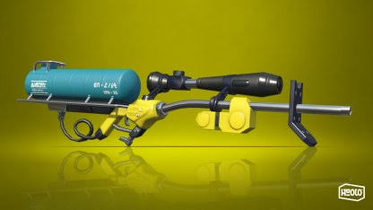
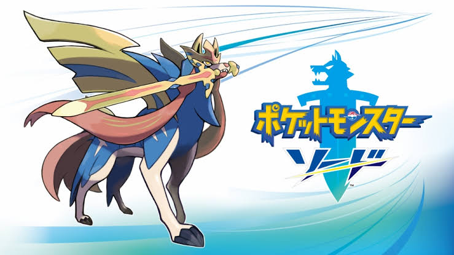
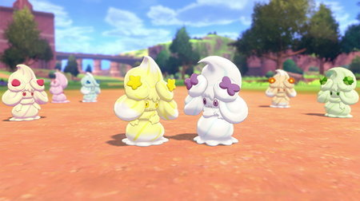

私の好きなゲームはスプラトゥーンです。switchのゲームの中では、スプラトゥーン２とポケモンがとても大好きです。
私の好きなゲームはスプラトゥーンです。switchのゲームの中では、スプラトゥーン２とポケモンがとても大好きです。

主に私は、リッター４Kスコープ使います。この武器はスプラトゥーン２の武器の中でも射程が長い武器です。

ポケットモンスター ソードも私の好きなゲームの一つです。

このゲームの中で一番好きなポケモンはマホイップです。ゲーム内で時間帯や回る方向や使いたいあめざいくで色んな色に変わるからとても可愛くて大好きです。